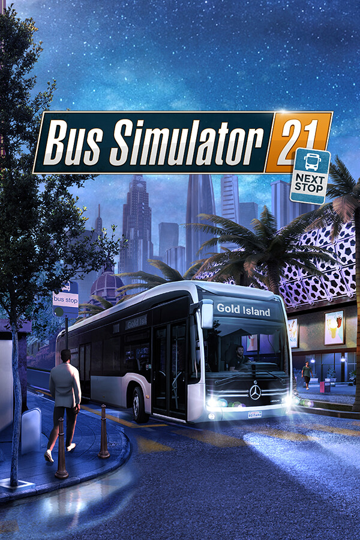

Bus Simulator 21 Next Stop
Bus Simulator 21 Next Stop
Details
|  | |
| Playtime | Not Played |
| Last Activity | Never |
| Added | 12/5/2024 12:44:03 |
| Modified | 12/5/2024 12:44:10 |
| Completion Status | Not Played |
| Library | Epic |
| Source | Epic |
| Platform | PC (Windows) |
| Release Date | |
| Community Score | |
| Critic Score | |
| User Score | |
| Genre | Simulation |
| Developer | |
| Publisher | |
| Feature | |
| Links | |
| Tag | [GGDeals] Synced |
Description

Look forward to Bus Simulator 21 Next Stop, and the most comprehensive and advanced fleet in the history of the series. For Bus Simulator 21 Next Stop, a fleet of 30 officially licensed buses by well-known, international manufacturers such as Alexander Dennis, Blue Bird, BYD, Grande West, IVECO BUS, MAN, Mercedes-Benz, Scania, Setra, and Volvo is available for you to drive. For the first time, you will also have access to a double-decker and electric buses.

Get ready for the brand-new, impressive US map Angel Shores and a revamped version of the European Seaside Valley map from the previous game instalment – including its map extension. Different difficulty levels and play modes are also available for a wide range of player types.

In Bus Simulator 21 Next Stop you have the option to use extended management elements like creating detailed timetables, buying and selling buses, and planning efficient routes. Do you prefer to get up from behind the desk and take control of your buses yourself? The auto-features of Bus Simulator 21 Next Stop can take over your management duties and let pure bus drivers simply enjoy their time on the road.

Play in either single-player or co-op multiplayer mode, transport your passengers safely and promptly to their destinations and be rewarded for your timely and safe driving at the end of each day.

Since Bus Simulator 21 release it was also vastly improved by the Next Stop update! It added many game improvements and a brand-new career mode to the main game of Bus Simulator 21 Next Stop. The latter combines the sandbox mode with the campaign's economic system.
In addition to the Next Stop update, you can also enjoy a free official map extension DLC. Look forward to a new area in the north of the "Angel Shores" North American map.
- Bus Simulator 21 Next Stop includes around 30 buses by international, well-known manufacturers
- Two huge, lively environments in the USA and Europe with an even greater open-world approach will make you itch to explore your surroundings
- Drive alone or with friends in the cooperative multiplayer mode
- Optional, refined management features such as setting up detailed timetables, visiting bus dealers on the map, or planning efficient routes
- Different play modes are available for a wide range of player types
- Supports popular steering wheels, gamepads, Tobii Eye Tracking, and TrackIR
- Major Next Stop update added a brand-new career mode to the game and included numerous bug fixes and game improvements for smoother gameplay
- Optional free map extension DLC with lots of new tasks for owners of the main game (seperate download)